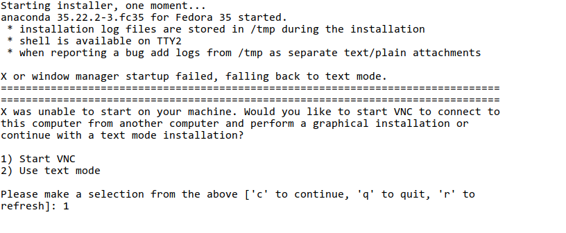
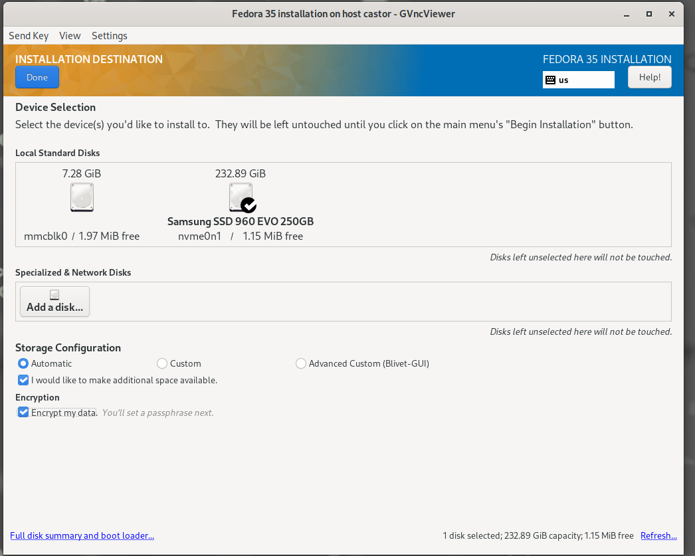
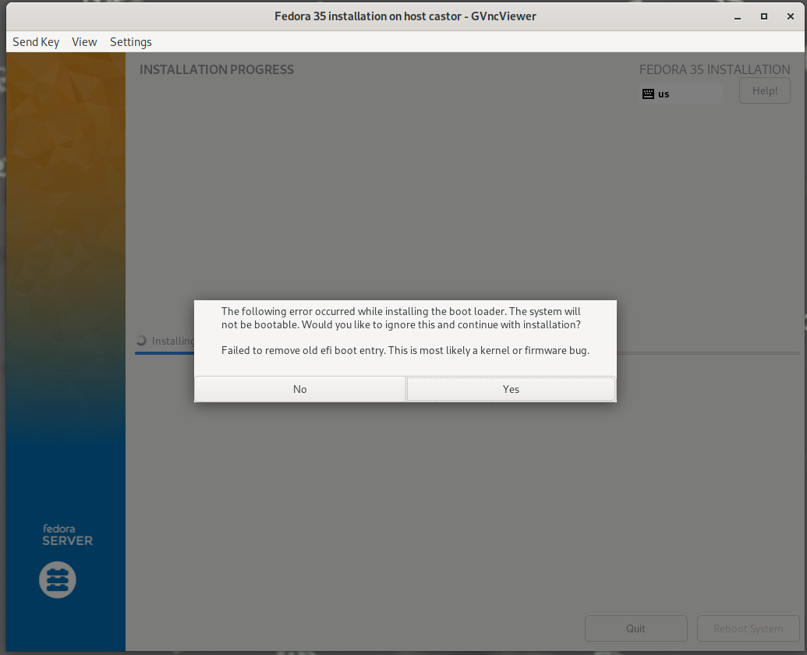

(Cheap) UEFI Measured boot on DeveloperBox
Posted on Fri 21 January 2022 in UEFI • 5 min read
How can measured boot help
TPMs are microcontrollers designed for cryptographic tasks. Don’t think of them as crypto accelerators though, cryptographic operations on your CPU will (almost) always be faster.
Even so TPMs have the ability to wrap and tie a key into certain platform measurements. This is called key sealing. The platform measurements are stored in Platform Configuration Registers, or for short, PCRs. PCRs are zeroed out on the platform boot and can only be reset on a system reboot. They can be extended by writing a SHA hash (typically SHA-1,256 for TPMv2) into the PCR. When a PCR is extended the hardware concatenates the new hash to the existing PCR value and new SHA is stored.
U-Boot supports EFI TCG2. Its purpose is to define APIs and provide information, for things like, is a TPM present, which PCR banks are active, obtain the TCG boot log, extend hashes to PCRs, append events to the TCG boot log etc.
So you can effectively encrypt your root filesystem and store the decryption key safely in your TPM. That key will only be released if the TPM PCRs contain the exact same values that they had when the key was sealed.
The PCR usage is described here
- PCR0: SRTM, BIOS, Host Platform Extensions, Embedded Option ROMs and PI Drivers
- PCR1: Host Platform Configuration
- PCR2: UEFI driver and application Code
- PCR3: UEFI driver and application Configuration and Data
- PCR4: UEFI Boot Manager Code (usually the MBR) and Boot Attempts
- PCR5: Boot Manager Code Configuration and Data (for use by the Boot Manager Code) and GPT/Partition Table
- PCR6: Host Platform Manufacturer Specific
- PCR7: Secure Boot Policy
- PCR8-15: Defined for use by the Static OS
- PCR16: Debug
- PCR23: Application Support
Why the DeveloperBox
A while ago I explained how storing EFI Variables into an RPMB partition of an eMMC works. There's basically three requirements.
- Your hardware has OP-TEE support
- A working eMMC in U-Boot and Linux
- Upstream U-Boot support
With an eMMC available we can also use Microsoft's firmware TPM (or fTPM) and enable measured boot.
This is the only hardware I had available which abides to those requirements. However what you'll read here applies to any board that has identical features.
Compiling (a lot)
There's a lot of firmware components that need to be compiled for this to work. Just for reference you will need
You'll also need complex instructions on how to compile those and assemble the image as well as some not (yet) upstreamed patches. Fortunately there's an OpenEmbedded layer from Linaro that can do this for us on the DeveloperBox.
git clone https://git.codelinaro.org/linaro/dependable-boot/meta-ts.git
cd meta-ts
kas build ci/synquacer.yml
Updating the firmware
You can find detailed instructions here The tl;dr version is flip DSW2-7 to enable the serial flasher, open your minicom and use xmodem to send and update the files.
All the files you need will be located at build/tmp/deploy/images/synquacer/
flash write cm3 -> Control-A S -> send scp_romramfw_release.bin
flash write arm-tf -> Control-A S -> send fip_all_arm_tf_optee.bin
flash rawwrite 0x500000 0x100000 -> Control-A S -> send optee/tee-pager_v2.bin
flash rawwrite 0x200000 0x100000 -> Control-A S -> send u-boot.bin
Install a distro
I am using Fedora on the example here, but since the U-Boot versions since 2021.04 are SystemReady-IR compliant any COTS distro should work.
sudo dd if=Fedora-Server-netinst-aarch64-35-1.2.iso of=/dev/sdX bs=128M status=progress
Plug your usb stick in a port and start up the board. In U-Boot's console do
usb reset
load usb 0 $kernel_addr_r efi/boot/BOOTAA64.EFI && bootefi $kernel_addr_r
Since I am using the box in headless mode, installing via VNC is a nice option to avoid the console nuisance.

Make sure you encrypt the filesystem using a password as we'll be needing this later on

It's worth noting that since U-Boot does not support SetVariable at runtime you'll get an error while the installer is trying to update the EFI Boot#### variables. This is far from fatal, you can just continue the installation and fix up the boot options later.

Once the installation completes, you will have 3 partitions: EFI, boot, and the luks encrypted root.
Reboot your board and stop U-Boot at it's console.
nvme scan
efidebug boot add -b 0 Fedora nvme 0 EFI/fedora/shimaa64.efi
efidebug boot order 0
bootefi bootmgr
That should set SHIM as your first boot choice.
Enabling fTPM
The kernel modules needed for Microsoft's fTPM are included in the Fedora35 kernel. However, since it relies on OP-TEE to provide the RPMB access, you need to start the TEE supplicant before the module gets inserted.
Compiling optee_client
On the target system, get a copy of optee_client compile it and install it. The default installation will end up on
/usr/local/sbin
git clone https://github.com/OP-TEE/optee_client.git
cd optee_client && mkdir build && cd build
cmake ../ -DRPMB_EMU=0
make -j$(nproc)
sudo make install
Enabling fTPM on systemd
Create /etc/systemd/system/tee-supplicant.service with the following contents
[Unit]
Description=tee supplicant
[Service]
User=root
ExecStart=tee-supplicant
Restart=always
[Install]
WantedBy=sysinit.target
and enable the service
sudo systemctl enable tee-supplicant
If you reboot your system now your firmwareTPM should be operational. You can check the logs with
sudo tpm2_eventlog /sys/kernel/security/tpm0/binary_bios_measurements
Sealing the key
Remember when you installed an encrypted filesystem? With the TPM up and running now you can automate the decryption of your root filesystem.
Fedora has clevis, an automated encryption framework, which can make your life easier as far as key sealing and unsealing is concerned.
sudo dnf install clevis clevis-luks clevis-dracut clevis-udisks2 clevis-systemd
sudo clevis luks bind -d /dev/nvme0n1p3 tpm2 '{"pcr_ids":"0,1,2,3,4,5,6,7"}'
Adding tee-supplicant to your initramfs
As we mentioned the fTPM relies on the op-tee supplicant for the RPMB accesses. So the missing piece of the puzzle in order to access your TPM, unseal your key and decrypt the filesystem, is create an initramfs with the needed modules and the tee-supplicant.
Create /usr/lib/dracut/modules.d/60tee-supplicant/ directory, copy the
/etc/systemd/system/tee-supplicant.service we created earlier and
add a module-setup.sh file with the following contents.
#!/usr/bin/bash
check() {
require_binaries /usr/local/sbin/tee-supplicant || return 1
return 0
}
depends() {
return 0
}
install() {
inst /usr/local/sbin/tee-supplicant /sbin/tee-supplicant
inst "$moddir/tee-supplicant.service" "$systemdsystemunitdir/tee-supplicant.service"
$SYSTEMCTL -q --root "$initdir" add-wants cryptsetup.target tee-supplicant.service
}
installkernel() {
hostonly='' instmods =drivers/char/tpm
instmods tee optee
}
You can now re-create your initramfs with
sudo dracut --add clevis-pin-tpm2 --add tee-supplicant --force
If everything is setup correctly you should see something along the lines of this on your screen
Welcome to Fedora Linux 35 (Server Edition) dracut-055-6.fc35 (Initramfs)!
<snip>
[ OK ] Reached target Basic System.
Starting Cryptography Setu…8ff0-43f6-9484-b4f16ff43093...
[ OK ] Started tee supplicant.
Please enter passphrase for disk Samsung SSD 960 EVO 250GB (luks-5fe9fed9-8ff0-43f6-9484-b4f16ff43093):
but this time you won't have to supply a password!
UEFI Secure Boot
At the time of the writing, due to toolchain complications, Fedora isn't signing their SHIM. Once this get's fixed we'll follow up on UEFI Secure Boot.